Friday · History
The : ending the without a finished republic
A mutiny in ended the . A bargain with named a republic. A constitution that could bind the man with the army did not follow.
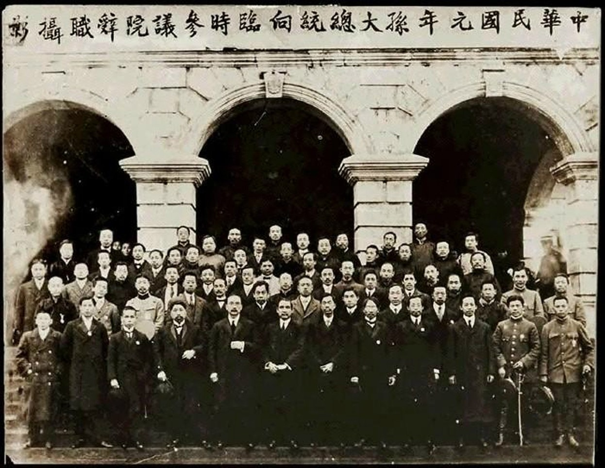
{kind=link}
is a calendar name for 1911 in the sixty-year cycle. The soldiers who mutinied in did not need that name. This lesson looks out from late China. did not command the ; he was in the United States raising money. The dynasty ended because , who held the , cut a deal. A republic was proclaimed. A constitution that could bind the man with the army was not secured. Casualty figures that cannot be sourced here are omitted. ’s execution in 1907 is named as earlier anti-Qing work, not retold.
Select any words, or tap a dotted term.
- 1895 Shimonoseki defeat in the . The ceded Taiwan and forced a large indemnity. The reform-or-revolution argument that follows starts from this shock.
- 1898–1901 Reform / Boxer The of 1898, then ’s coup. The and the of 1901 left the court paying indemnities and launching to save itself.
- 1905 Exams / Tongmenghui The were abolished. In Tokyo, , , and others formed the . became its paper.
- 1908–09 Puyi and died in November 1908. The child became the . ruled as . was retired from high office.
- May–Sept 1911 Railways The court nationalized locally financed railway projects and took a for the lines. ’s followed. Troops were pulled from toward .
- 10 Oct 1911 Wuchang After an accidental bomb in the day before, units in mutinied, seized the arsenal, and forced to front a .
- 1 Jan 1912 Nanjing , back from overseas, was inaugurated of the in . became provisional vice-president.
- 12 Feb 1912 Abdication issued the for the six-year-old . was already the court’s last general and the revolutionaries’ necessary partner.
- 10 Mar 1912 Beijing was sworn in as in . The capital stayed where his army was. The was promulgated the next day.
- 1913–16 Song / Hongxian was shot at on 20 March 1913 and died two days later. ’s monarchy attempt of 1915–16 collapsed. He died in June 1916. followed.
Before
After 1895 the court tried to save itself; students in Japan learned how to bury it
The First ended with the . Taiwan was ceded. A large indemnity was due. Korea slipped from suzerainty. The defeat was not only a lost campaign. It showed that a neighboring state which had rewritten its army and schools could beat the empire that still recruited officials by the . From that shock two programs were argued in public, often by people who had known one another and then split.
and wanted a constitutional monarchy under the . In 1898 they had a of edicts — the — before staged a coup, confined , and drove the reformers overseas. In exile they organized to protect the emperor, not to kill the dynasty. had already chosen the other door. A commoner schooled in Hawai‘i and Hong Kong, trained as a physician, he had founded the in Honolulu in 1894 after the would not hear his reform petition. Failed risings followed. After 1900 the and the left the court paying another indemnity to the foreign powers and trying, late, to modernize itself in order to survive.
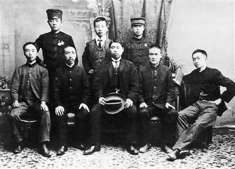
{kind=link}
The of the 1900s were the court’s answer. The examinations were abolished in 1905, which cut the old path from classical study to office. New schools and military academies were opened. were promised and, from 1909, seated. A was trained on foreign drill, with ’s divisions as the strongest cluster in the north. None of this was intended to produce a republic. It produced the people who could staff one. Students went to Japan in large numbers. In Tokyo on 20 August 1905, Sun, , and others merged older groups — including the and Huang’s — into the , the . carried the arguments. The — nationalism, democracy, and a livelihood plank Sun never made into a finished economic program — were the public vocabulary. The work on the ground was also older: secret societies, failed putsches, and women as well as men. , who had studied in Japan, edited a women’s journal in Shanghai and was executed in 1907 after ’s rising at . That death belongs in this decade of anti-Qing organizing. It is not a suffrage sequel, and it is not retold here.
and died on successive days in November 1908. The child became the . , his father, served as and pushed into retirement. The court still talked of a constitution, on a timetable it kept shortening. What it could not do was finish a railway map without foreign money, or keep the ’s junior officers from reading the same Tokyo papers as the students.
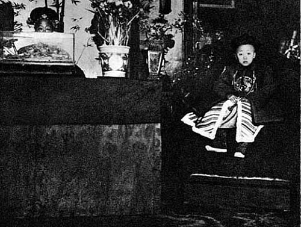
{kind=link}
The era
A railway crisis, an accidental bomb, and a New Army that mutinied without a single hero
In the spring of 1911 the , under , moved to nationalize locally financed railway projects. A — British, French, German, and American banks — supplied a large loan for the lines, the and routes that were supposed to tie the interior to the Yangtze. On 9 May the nationalization order went out. Shareholders in , who had put provincial money and gentry savings into a railway company that had barely begun to lay track, were offered terms they rejected. The that followed was not a plot. It was merchants, students, and the against a court that looked as if it were selling the road to foreigners in order to pay old debts. In September the authorities, with as the hard edge, broke up the movement in . units were ordered in from neighboring . That transfer thinned the garrison around .
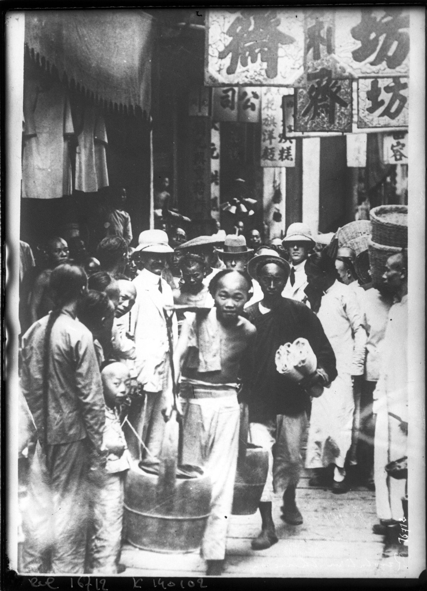
The men who actually took were not Sun’s travelling staff. They were soldiers in , organized in two overlapping groups, the and the , who had been recruiting inside the ranks. and were not in the city. Sun was in the United States. A rising had been discussed for early October, then delayed. On 9 October, in a hideout in the , someone preparing explosives set off a bomb by accident. The blast brought police. Membership lists were found. Arrests followed. On the morning of 10 October three men — , , and — were executed. The remaining plotters inside the barracks could wait to be named from the lists, or they could move.
They moved. That evening the , with among the junior leaders, mutinied and made for the arsenal, where other comrades were already posted. Artillery and transport units came over. , a company officer with more rank than the first mutineers, was pushed into field command because a mutiny still wanted a chain of command. The Viceroy, , fled. By the next day was in rebel hands; and followed. There is no single hero in that sequence. There is an accident, a list, three executions, and a garrison that decided not to wait its turn.
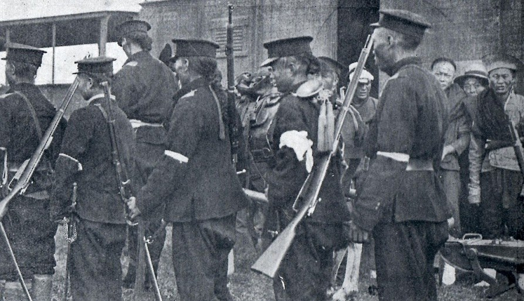
{kind=link}
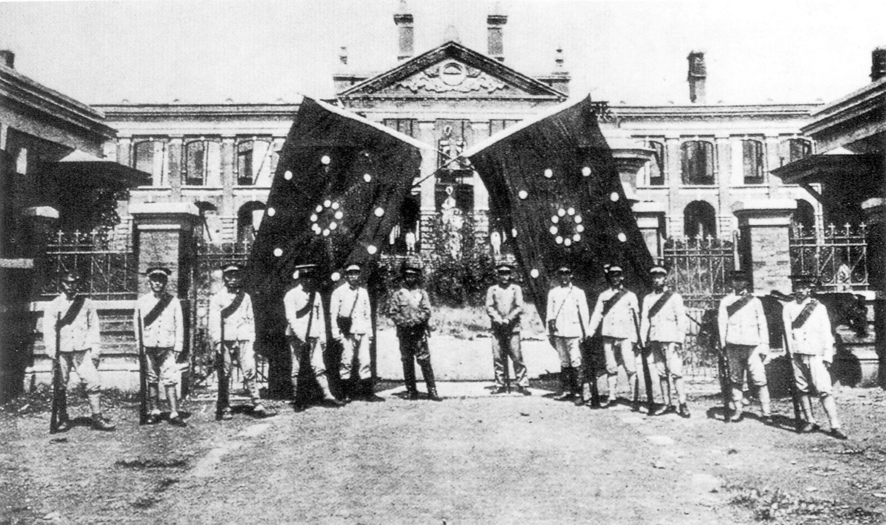
{kind=link}
A government needed a name the and the city’s merchants would recognize. was a brigade commander, popular enough with soldiers, not a member, and not a plotter of the bomb. He was pressed into serving as of . The later stories about how reluctantly he accepted are less important than the political fact: the mutineers borrowed a non-revolutionary officer because a republic, even a local one, still had to look like command. Telegrams went out asking other provinces to follow. Through October and November, assemblymen, officers, and gentry in province after province declared against the . The map did not wait for Sun.
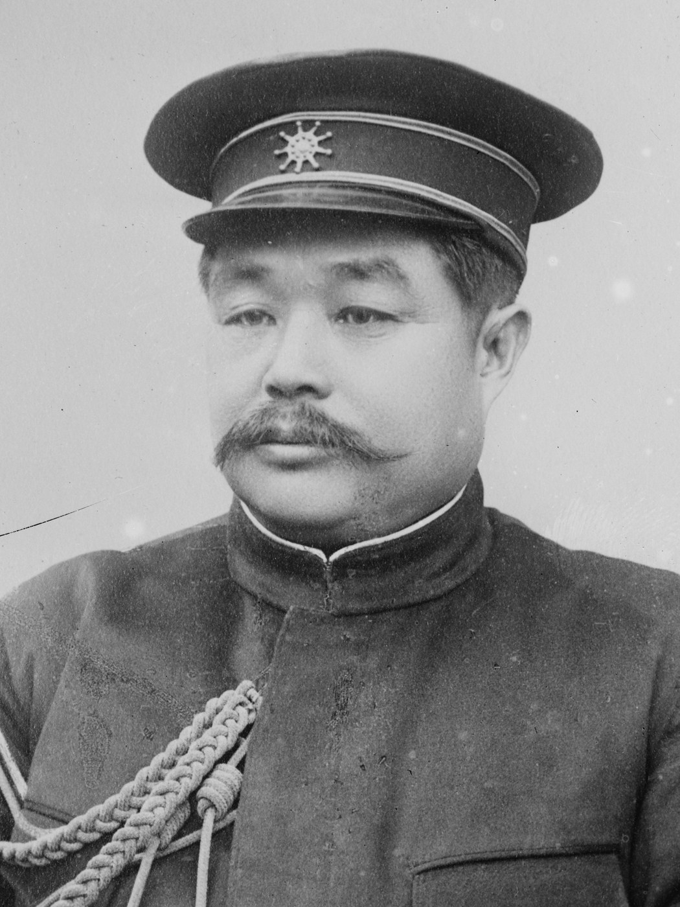
{kind=link}
reached the and took a field command in the fighting that followed, the against units was sending south. The revolution did not win that fight on points. It won because other provinces had already peeled away, and because did not use the only to restore the court. was taken in early December. Delegates from the independent provinces gathered there. Sun, having gone from to London and Paris to argue against new foreign loans to the , reached Shanghai in late December. On 29 December the delegates elected him . On 1 January 1912, in , he was inaugurated and the was proclaimed. The calendar of would number 1912 as Year One. was named provisional vice-president. A cabinet sat. took education; was at the center of the military side. The photograph of that first state council is a table, not a constitution.
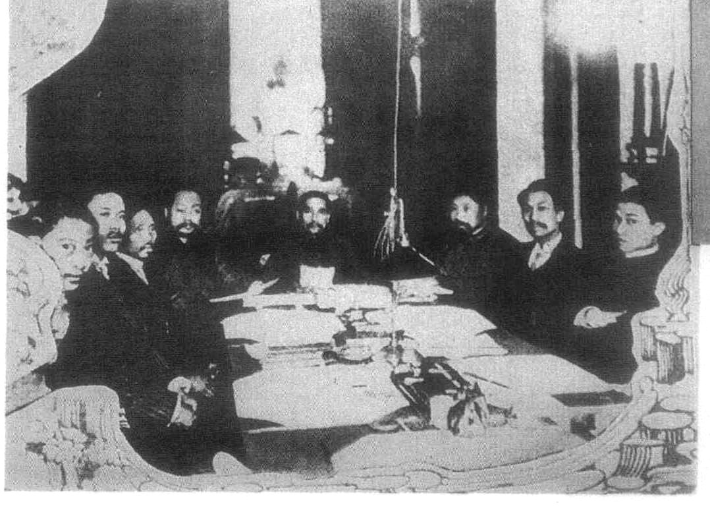
{kind=link}
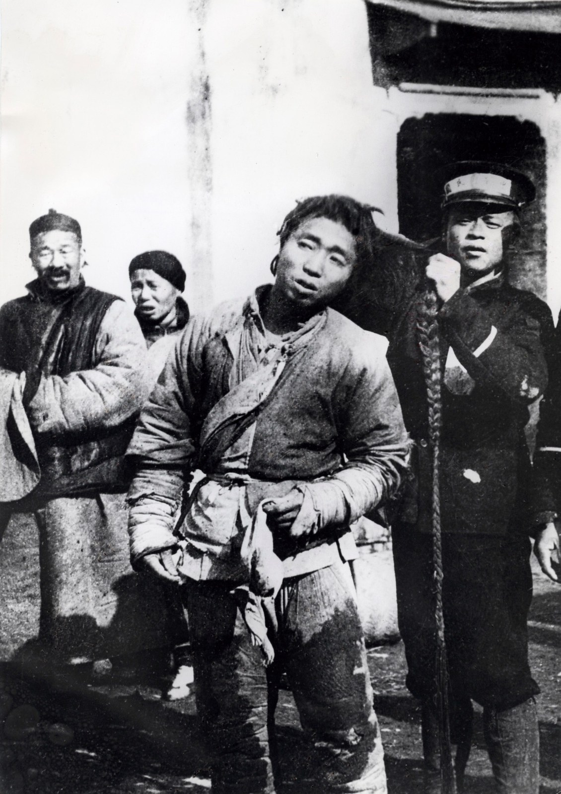
_de_vroeger,_SFA002011346.jpg){kind=link}
How it showed up
The Yuan bargain, and why a republic was not yet a constitution
The court, in panic, recalled and put the in his hands. He fought enough to show he could take back, and not enough to restore a child emperor. He negotiated with the revolutionaries through and others while squeezing the . Sun offered the presidency if would deliver a republic. offered the survival if it would abdicate. On 12 February 1912 issued the in the name of the . The promised the court a stipend, the right to remain in the for a time, and the rituals of a retired monarchy. The ended as a contract. was six.
Sun resigned. The photograph on the steps of the records that resignation, not the January inauguration. On 10 March was sworn in as in , among his officers, at the . The next day the was promulgated. It described a cabinet responsible to a legislature and a president who was not supposed to be a new emperor. The capital remained because that was where ’s army lived. had been a revolutionary choice. It was not a military fact. “Republic” in 1912 meant: no emperor, a flag, a calendar, a senate, and a general who had not been elected in any popular sense. It did not yet mean a rule that could stop that general.
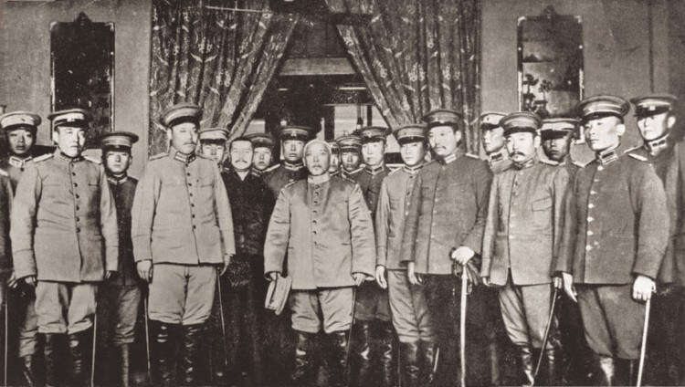
{kind=link}
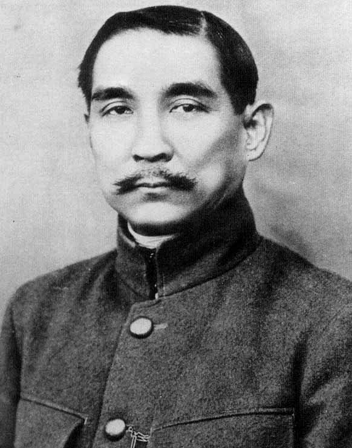
Sun Yat-sen 孫中山
1866–1925
Physician, overseas organizer, head of the . He spent 1911 on a fundraising circuit in the United States and learned of from a newspaper in . Elected in , inaugurated 1 January 1912, he held the office for weeks and then resigned so would take the down with him. The later cult treats him as founder. The 1911 file treats him as the name a scattered alliance already had, and as the man who could talk to foreign capitals about loans.
Sun as , 1912, in a high-collared tunic. The portrait is an office image, taken after , not a field photograph from 10 October.Wikimedia Commons / public domain
{kind=link}
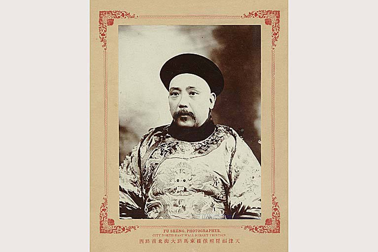
Yuan Shikai 袁世凱
1859–1916
Builder of the , retired by the , recalled to save the dynasty. He saved himself. The is his leverage made into an edict. The presidency in is his army made into a title. In 1915–16 he tried to become emperor under the era name and failed. He died in 1916. The are what his army became once there was no longer one to hold it.
as a official, photographed in Tianjin by , about 1900. The verso of the University of Washington print calls him viceroy of Zhili, afterwards first president of . The robe is the career the court recalled in 1911.Fu Sheng / University of Washington Libraries, Robert Henry Chandless Photographs / public domain
.jpeg){kind=link}
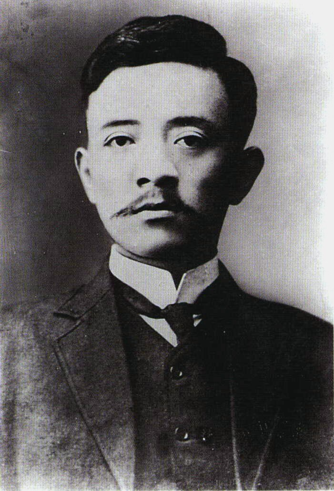
Song Jiaoren 宋教仁
1882–1913
organizer, then the man who tried to turn the alliance into a parliamentary party. In 1912 he helped merge the into the and campaigned for a cabinet that would check the president. The 1912–13 elections gave his party the largest bloc in the new . On 20 March 1913 he was shot at on his way to . He died on 22 March, not yet thirty-one. Without him lost the person who had treated the as a job, not a decoration.
, studio portrait from before his death in 1913. The suit is the parliamentary career he was building, not a battlefield costume.Wikimedia Commons / public domain
{kind=link}
had been the military organizer of the , the man who stood in the Tokyo photographs and later in the fighting. He is in the cabinet picture. He is not a fourth founder-statue in this lesson because the unfinished republic is clearer in Song’s murder than in another portrait of a general. ’s career after — vice-president, later president — is what happens when a mutiny’s borrowed name stays in politics. ’s one state act that still matters is the edict. The child on the throne did not write it.
Same time elsewhere
Mexico’s civilian was not safe either; Europe was still sending gunboats
In Mexico the old regime of had already begun to crack in 1910. In May 1911 Díaz resigned. , a civilian who had called for elections, became president that November — the same autumn as . In February 1913 he was overthrown and killed. The did not end with a finished constitution in 1911 any more than China’s did. The comparison is not a formula about continents. It is the same problem in the same years: removing a long personal regime is not the same work as binding the next man who has troops.
Europe, that summer, was still in the gunboat business. In July 1911 Germany sent the to in a quarrel with France over Morocco — the . The was, at the same moment, borrowing from a four-power banking group to pay for railways it had just seized from its own provinces. The foreign loan and the foreign gunboat were the world in which a Chinese republic had to open. They are contemporaneous facts, not assigned peers.
After
Song was killed, Yuan tried on a crown, and the army divided
The ’s showing in the 1912–13 elections made the obvious premier of a cabinet that would have narrowed ’s room. The shooting at on 20 March 1913 ended that path. Evidence ran toward people around ’s government; was never put on trial for it. Sun and Huang tried an armed in the summer of 1913 and lost. banned the party, hollowed out , and in 1915 accepted Japan’s in a shortened form that still marked how weak the new state was abroad. In December 1915 he announced a monarchy, with 1916 as the . Provinces rebelled. He cancelled the empire in March 1916 and died on 6 June.
What remained was the without ’s one manager, and a south that had already learned to declare independence. The are that split made routine. The kept its name, its calendar, and, on paper, its offices. It did not keep a monopoly of force. The student movement of 1919 and the later reorganized would work in that wreckage. They are the next problems, not this lesson. 1911 ended an empire. It did not finish a republic. That unfinished ground is the fact later politics had to stand on.
A question
A question to keep asking
If a mutiny still needed a non-revolutionary officer’s name, and a republic still needed ’s army, what did the word republic actually bind in 1912?
Fun fact
The man later called the father of the Republic read about Wuchang in a newspaper
On 10 October 1911 was in the United States raising money among overseas Chinese. He was in . A coded telegram from reached him, but he learned that had actually risen from an English-language newspaper. He did not sail straight home to take command of a battle he had not directed. He went first to London and Paris to press the powers not to loan new money to the . By the time he reached Shanghai, in late December, the mutiny was already a string of provincial declarations. The later cult of a founding father has to live with that itinerary.